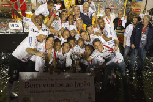

Vamos falar do Corinthians
introdução
Como surgiu?
O clube foi fundado por um grupo de operários do bairro do Bom Retiro:
Joaquim Ambrósio, Antônio Pereira, Rafael Perrone, Anselmo Corrêa e Carlos Silva.
Eles eram trabalhadores humildes que queriam criar um time de futebol acessível ao povo
diferente dos clubes da época, que eram voltados para a elite.
Quantos titulos tem?
Internacionais - 4
2x Mundial de Clubes da FIFA — 2000, 2012
1x Copa Libertadores da América — 2012
1x Recopa Sul-Americana — 2013
Maiores Feitos
1. Conquista invicta da Libertadores (2012)
Campeão da copa libertadores da america sem perder nenhum jogo.
Campanha historica, algo rarissimo
Destaques para Cassio Ramos e Emerson Sheik
